using the demo/example client app for the AWS-serverless
overview
TARINAA TÄHÄN ODC/readme.md
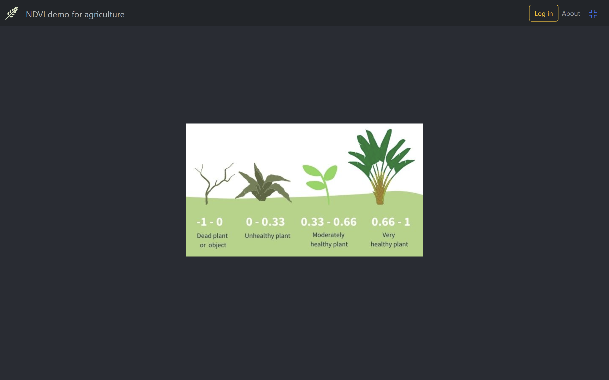
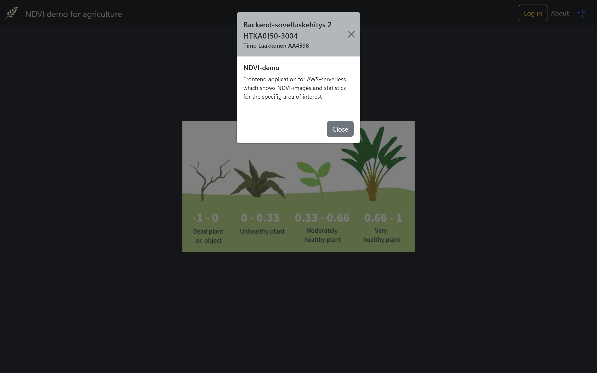
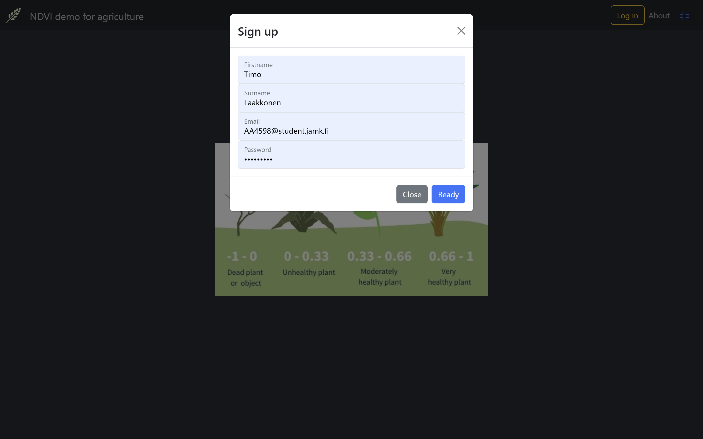
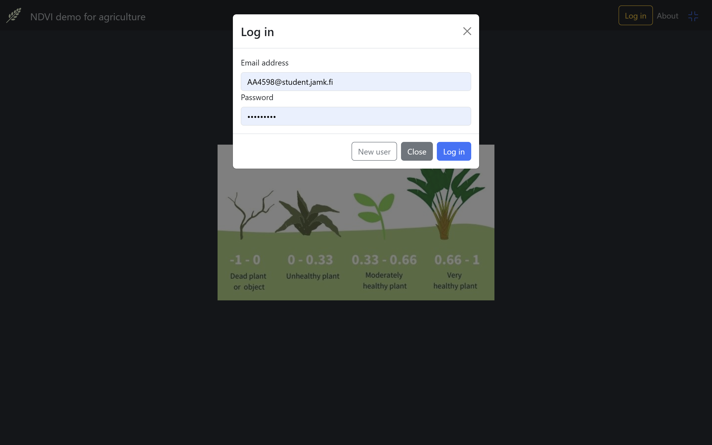
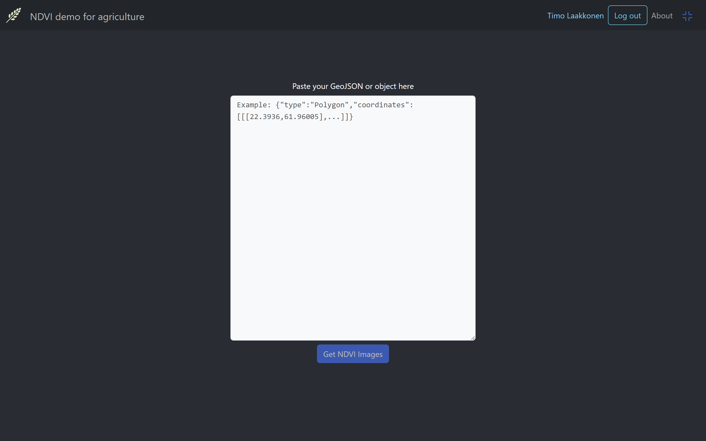
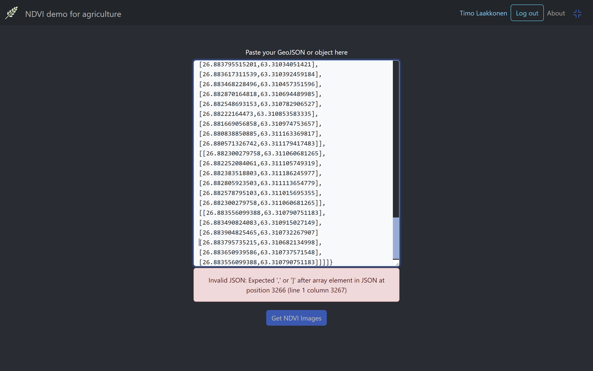
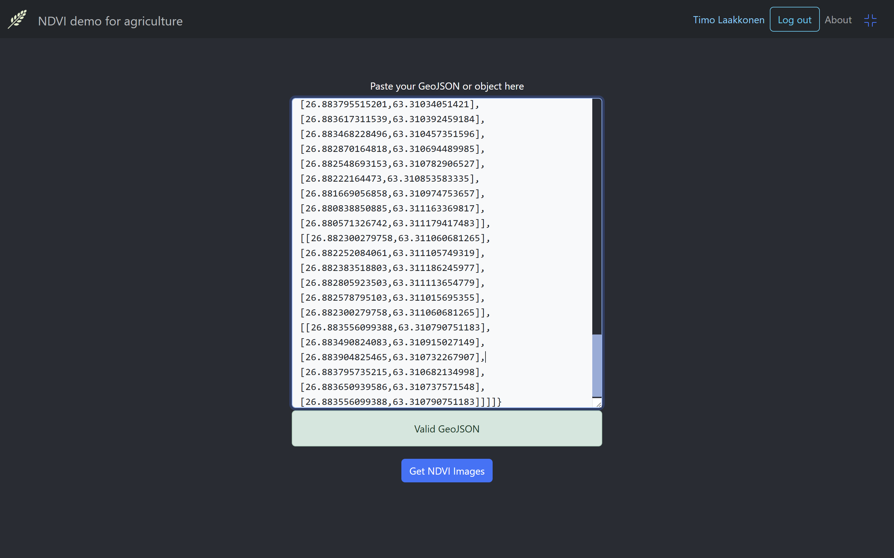


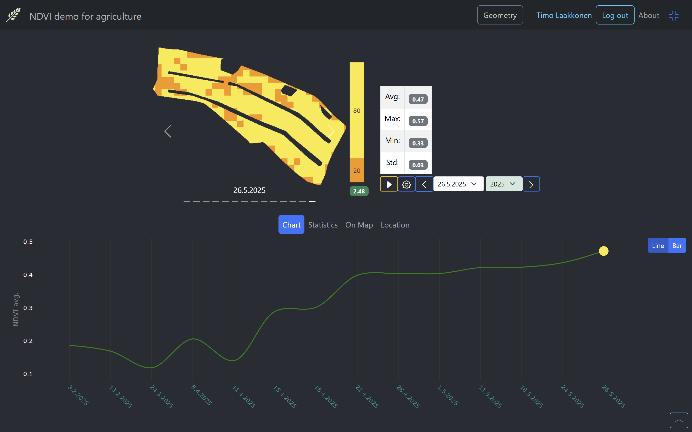
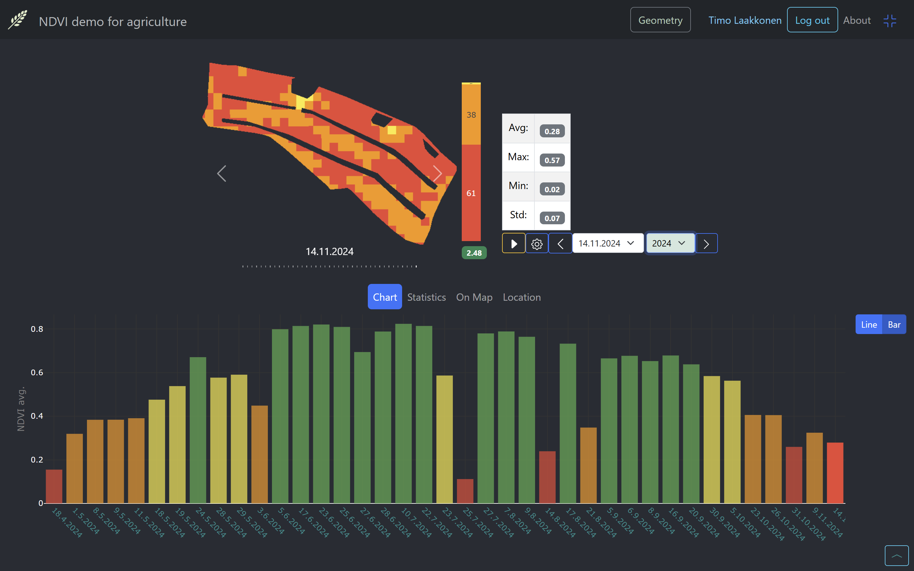
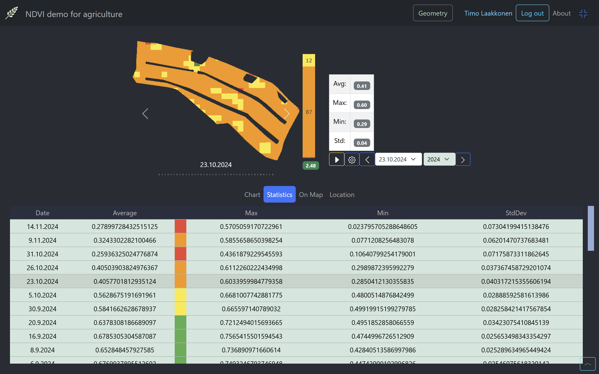
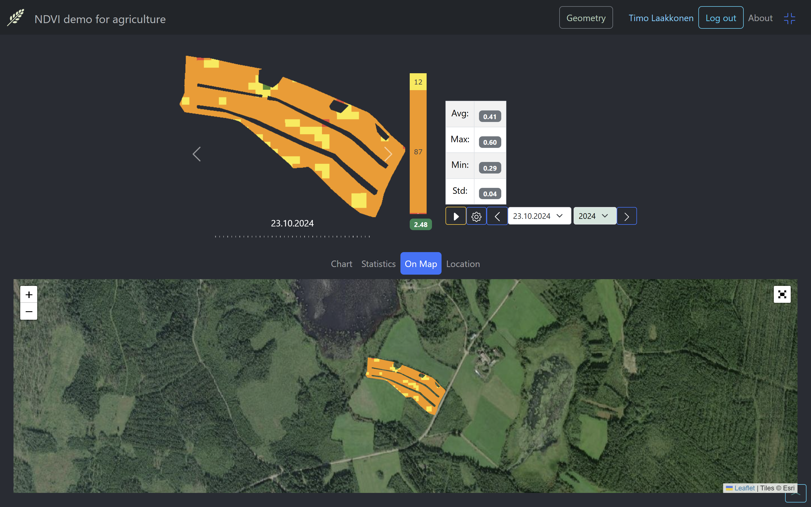


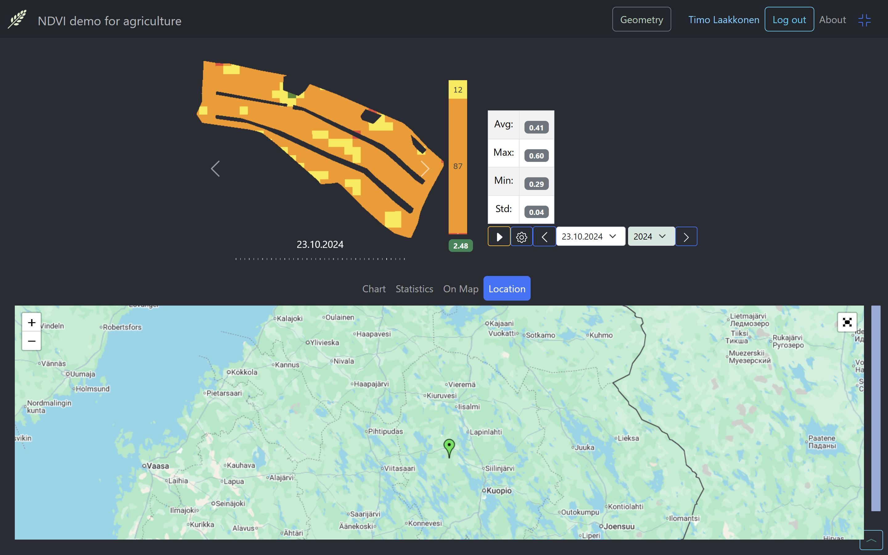
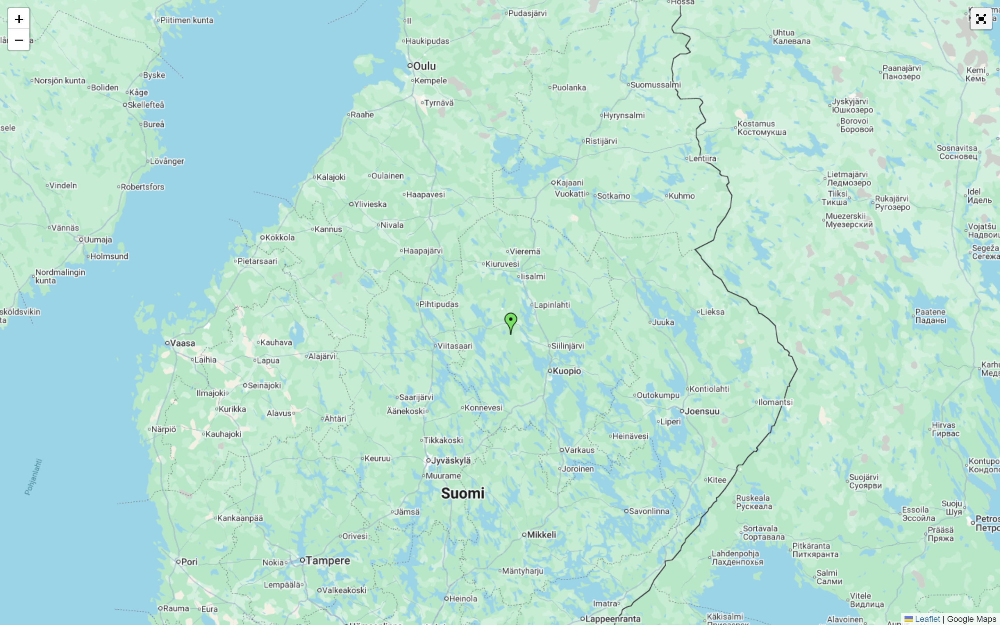
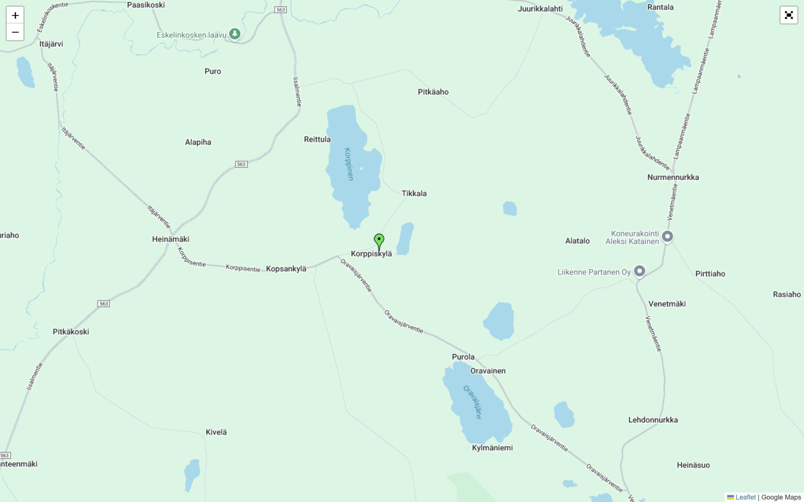
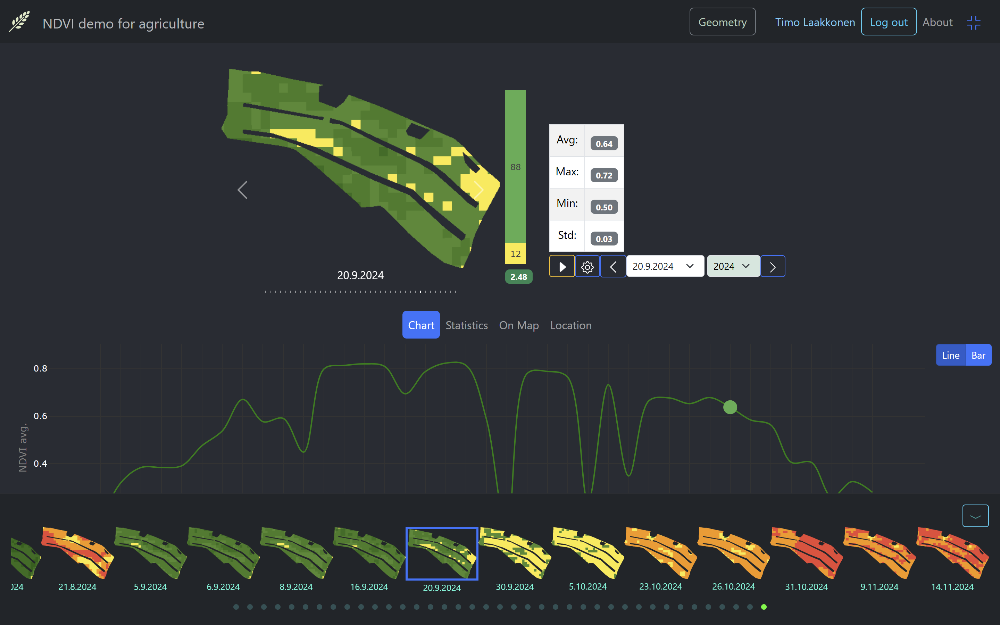
At the app bar there is button geometry for add new geometry of area of interest.
kerro kontrolleista kuinka voidaan vaihtaa päivämäärä bar-view swipe film dropdown
mainitse, että axios.all is used in parallel processing for the images from sentinelhub into mongoDb, jossakin toisessa yhteydessä mutta websocket info of the process käy tois nopeasti tässä tapauksessa.
At first time when there is not data in database it takeas a while for the process. When the data is already saved to the database, the data to the client is loaded very quickly.